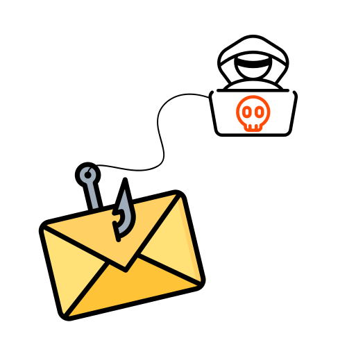

Você
não
tem certeza?
Recebeu um e-mail estranho e ficou na dúvida? Envie o arquivo e a gente te ajuda a descobrir se é golpe ou não — simples, rápido e sem complicação.
Selecionar arquivo EML
Selecione um arquivo EML para análise
Analisar Arquivo
Analisando...
